Heart Shaker
spreads gratitude for a better world
My Role
UI/UX Designer, Web DeveloperDuration
4 MonthTools
Figma, Adobe Illustrator, Adobe Photoshop, Miro, Trello, Visual Studio, MySQLOverview

CHALLENGE
Design Process
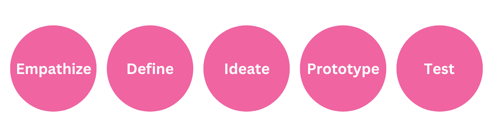
Empathize
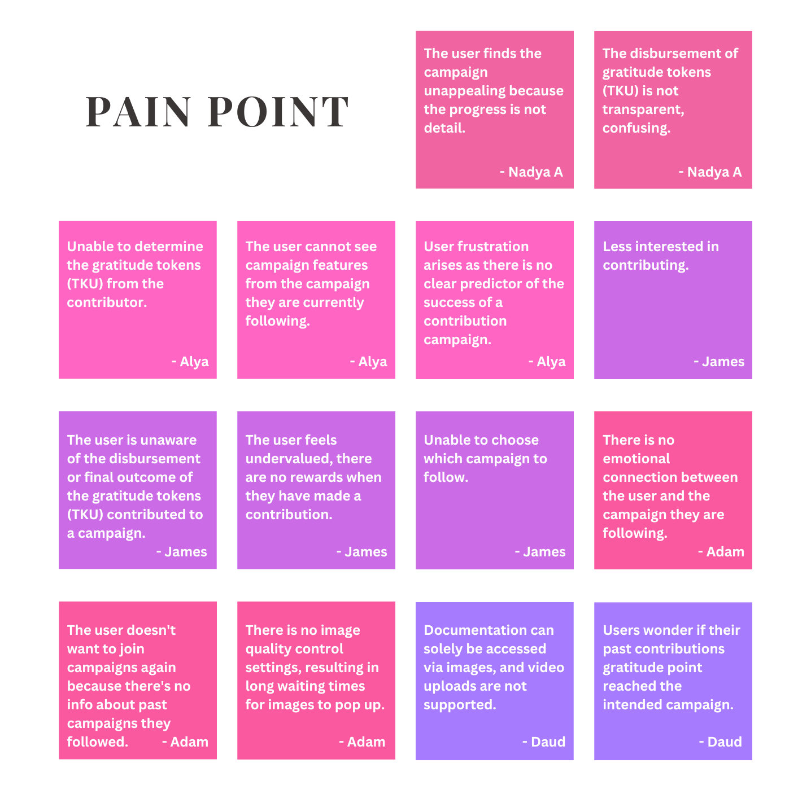
To better comprehend user concerns, I embarked on a research journey that began with an in-depth review of academic literature related to comparable applications. Furthermore, I carefully analyzed user feedback on the Play Store and closely examined recorded Ask Me Anything (AMA) sessions featuring current Hear Shaker users. This extensive investigation revealed several identified issues, such as insufficient progress information, limited access to campaign post, the incapacity to select preferred campaign updates, a lack of transparency concerning contribution and gratitude tokens (TKU), and the absence of rewarding features, among other challenges.
Define
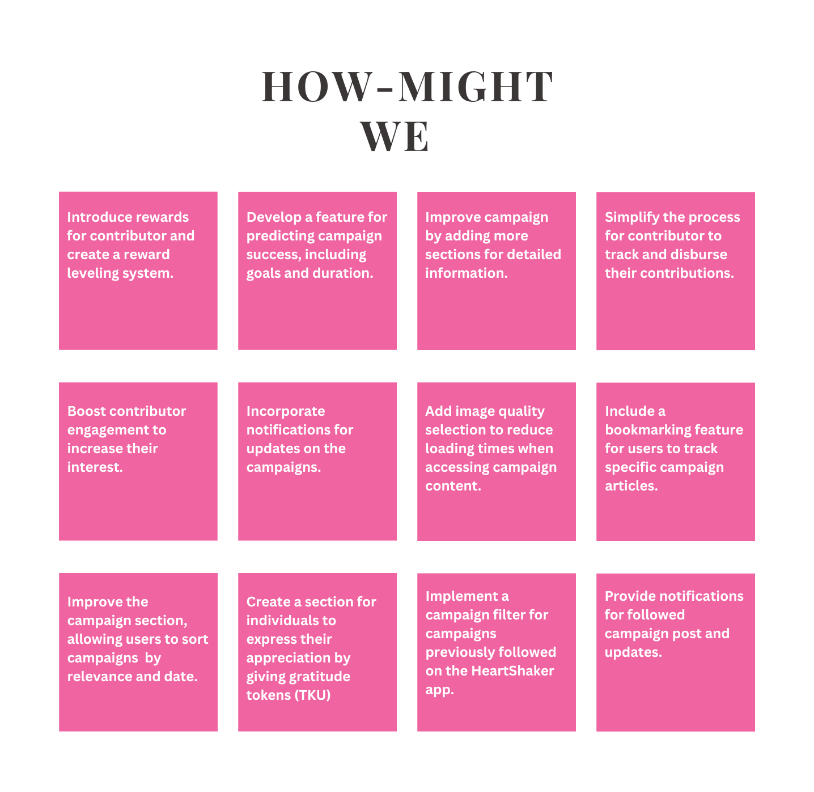
Ideate
Solution Idea
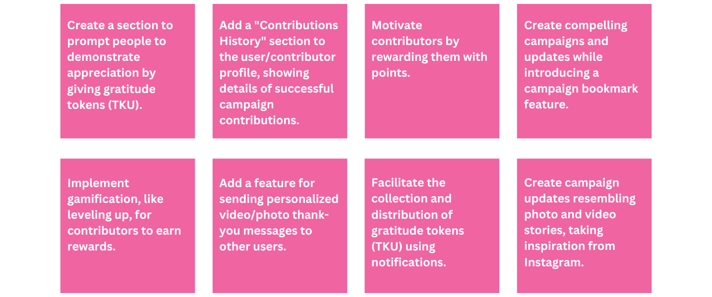
Next, I prioritized solutions based on the results of voting, with at least four main solutions:
- Simplify the contributor's disbursement of contributions
- Enhance contributor engagement to heighten their interest.
- Implement rewards for contributors and establish a reward leveling system.
- Integrate a bookmarking feature for users to monitor specific campaign posts.
However, I didn't discard other solutions but instead grouped them into an affinity diagram to complement the application's performance, encompassing social features, wishlists, reward programs, and future features.
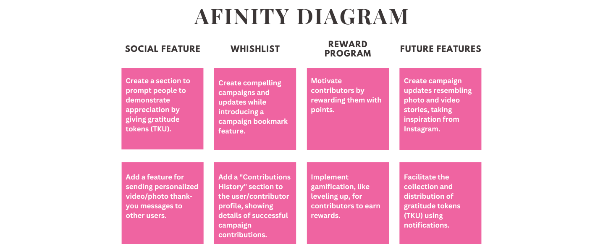
When creating the UI design, I need to consider resources and time constraints, so I prioritize features based on Heart Shaker's main challenge, which is revamping the campaign feature.
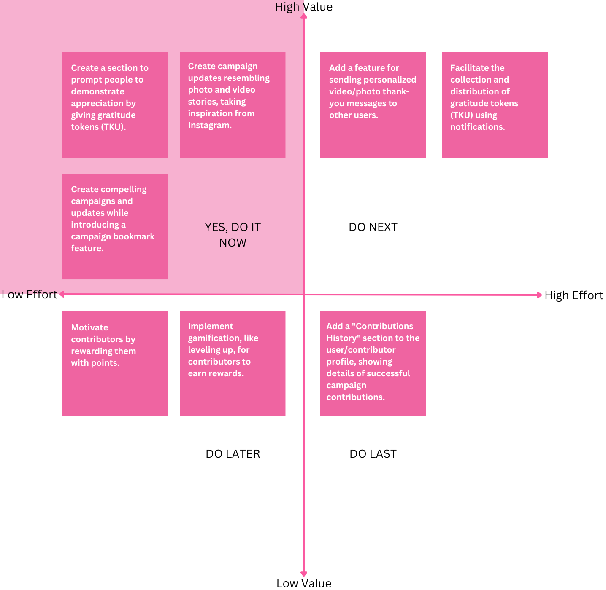
Our focus is on features that serve the following functions:
- Create a section to prompt people to demonstrate appreciation by giving gratitude tokens (TKU).
- Create campaign updates resembling photo and video stories, taking inspiration from Instagram.
- Create compelling campaigns and updates while introducing a campaign bookmark feature.
- Create a feature for sending personalized video/photo thank-you messages to other users.
Prototype
User Flow
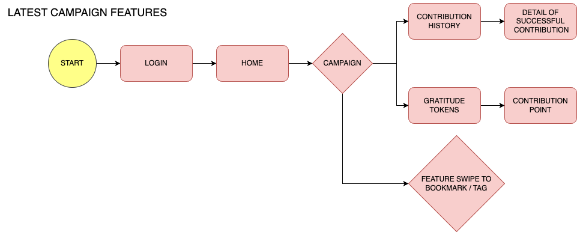
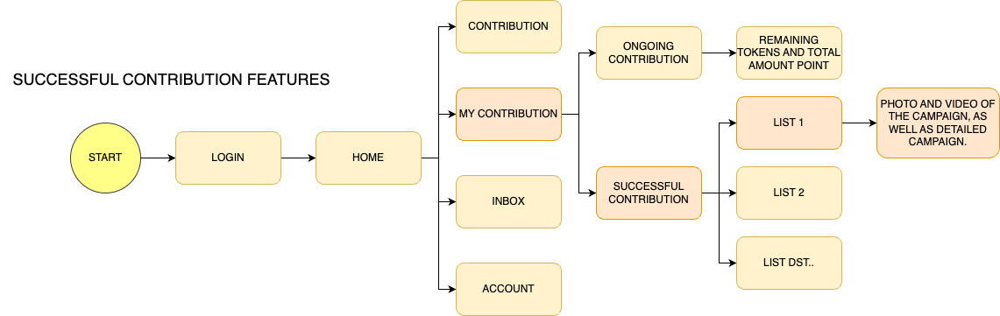
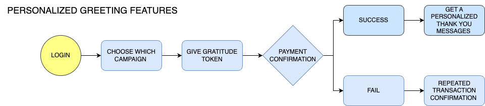
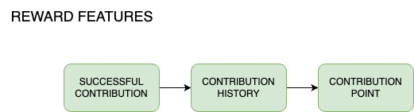
Afterward, I compile the user flows into one cohesive flow.
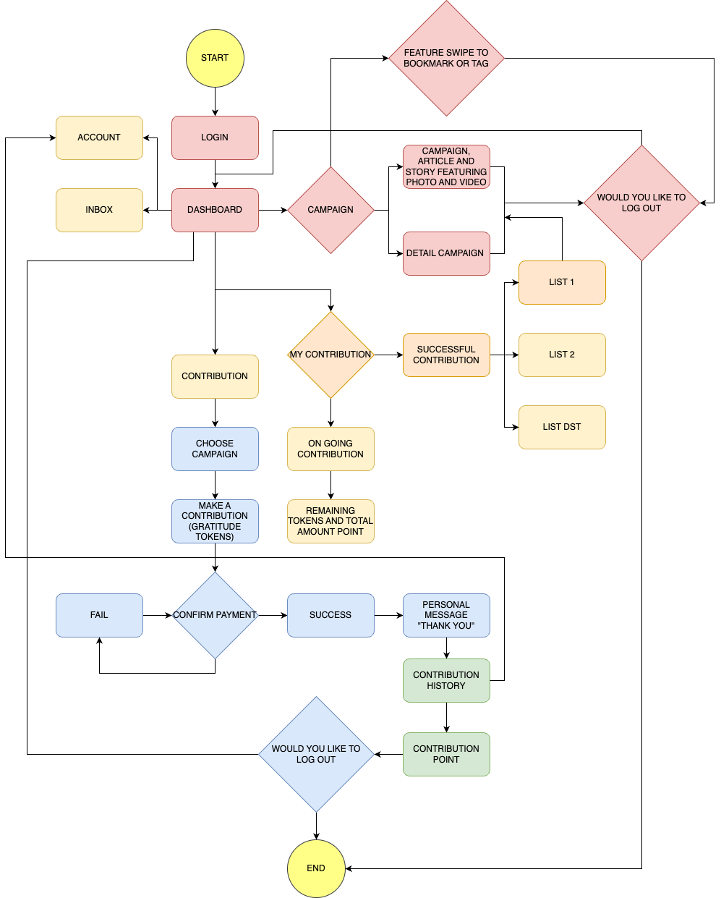
I begin creating a design system and low-fidelity wireframes for each feature.

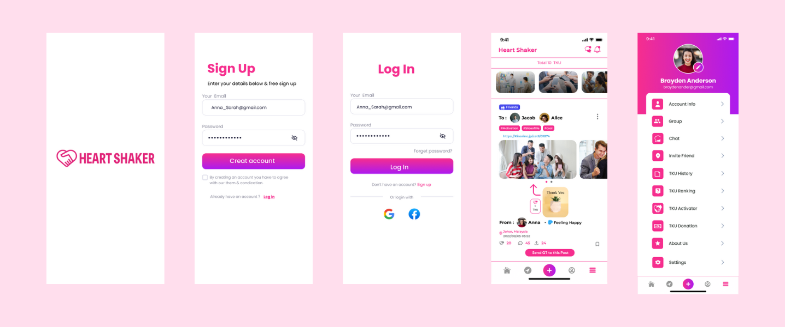
2. A gratitude token section for appreciation.
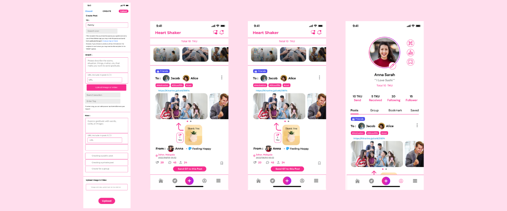
3. Campaign bookmark section.
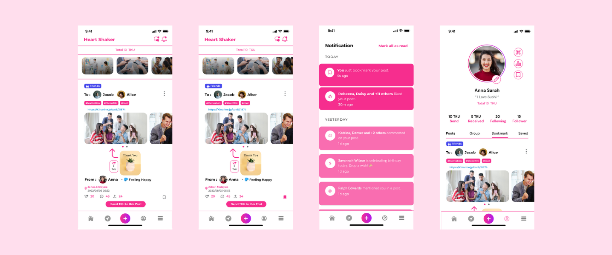
4. Campaign updates as photo and video stories.
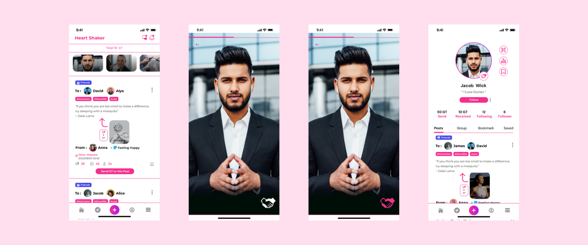
5. sending personalized video/photo thank-you messages section
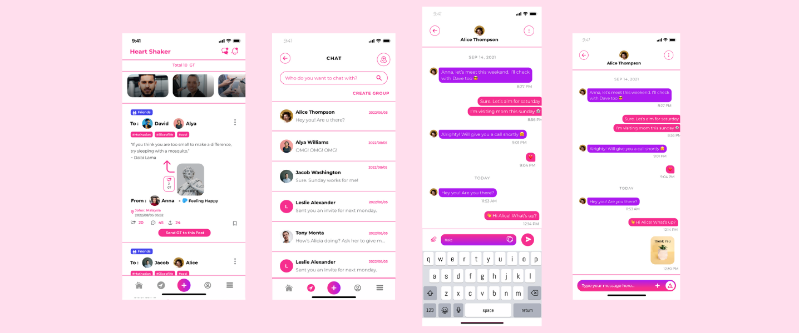